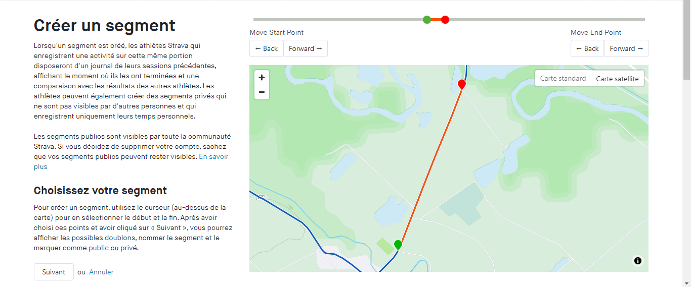
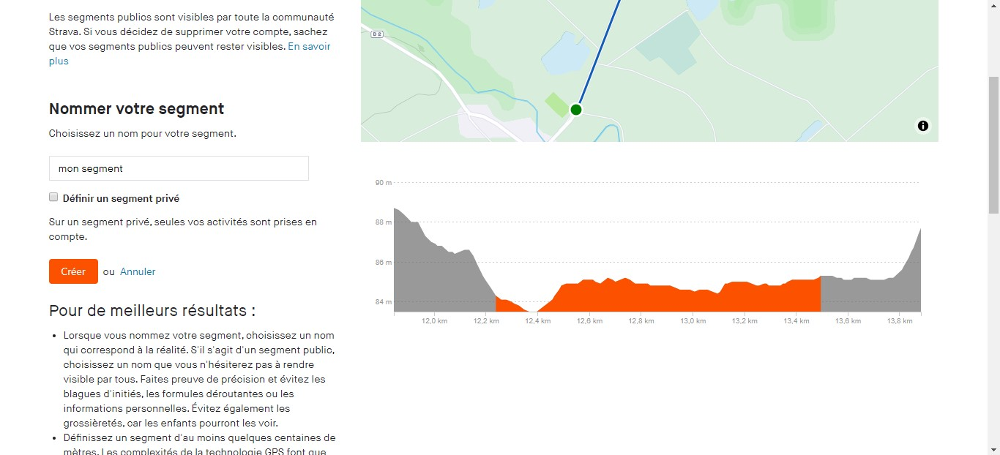
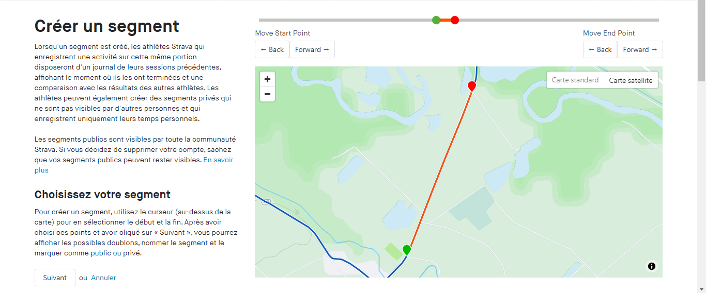
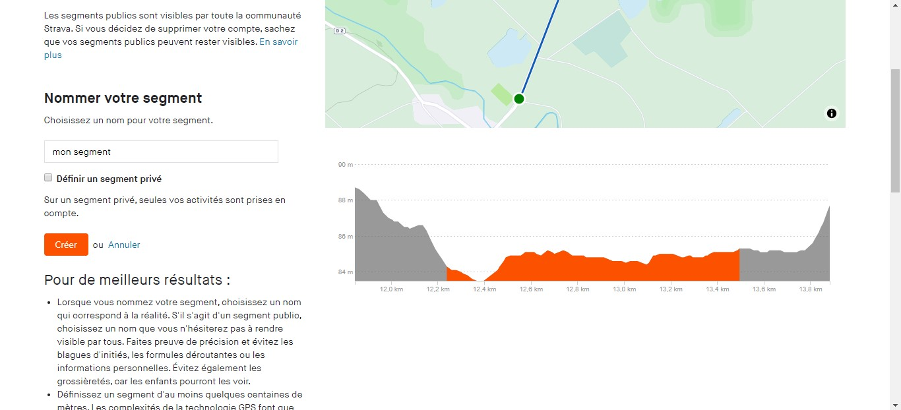

les segment de réference
qu'est-ce que les segments de réference ?
Les segments de réferences servent à évaluer vos performance lors de vos séance de fractionné. Vos meilleurs temps sur ces segments vous serons indiquer dans le résumé de séance. Cela vous permet d'évaluer vos performance.
comment créer un segment de réference ?
Pour créer des segments de réferences vous devez tout dabord selectionné des segments comme favoris sur strava
 après avoir mis vos segment de réference en "favoris", vous devez les attribuer à l'une de vos séance
après avoir mis vos segment de réference en "favoris", vous devez les attribuer à l'une de vos séance
 veuillez sélectionner des segements en accord avec vos séance, par exemple, pour les séance de fractionné
30s/30s veuillez attribuer un segment durant moins de 30 secondes, ce segment doit également être placer
veuillez sélectionner des segements en accord avec vos séance, par exemple, pour les séance de fractionné
30s/30s veuillez attribuer un segment durant moins de 30 secondes, ce segment doit également être placer
comment créer un segment ?
Pour créer des segments vous devez tout dabord aller dans les segments d'une activité puis selectionner
"créer un segment"
 puis définisser votre segment sur la carte

puis nommer votre segments et renseignez le type de segment (privé ou public)

puis selectionner "créer"
puis définisser votre segment sur la carte

puis nommer votre segments et renseignez le type de segment (privé ou public)

puis selectionner "créer"